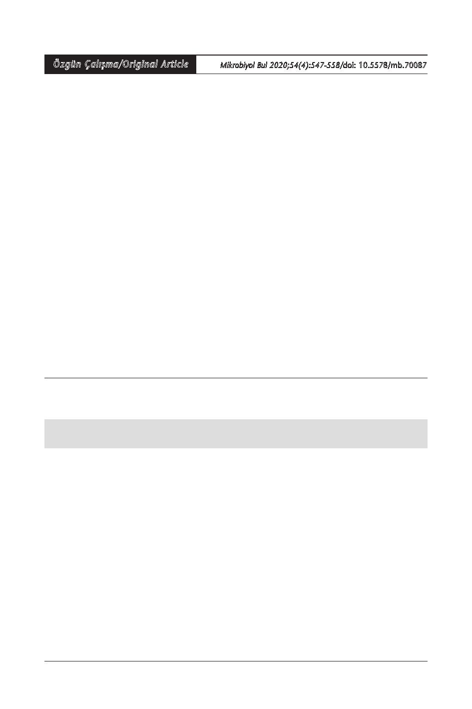

Özgün Çalışma/Original Article
Mikrobiyol Bul 2020;54(4):547-558/doi: 10.5578/mb.70087
Geliş Tarihi (Received): 02.08.2020 • Kabul Ediliş Tarihi (Accepted): 28.09.2020
Piperasilin/Tazobaktam ve Siprofloksasin
Sub-minimal İnhibitör Konsantrasyonlarında
Pseudomonas aeruginosa Biyofilm Oluşumunun ve
Quorum Sensing Genlerinin Araştırılması
Investigation of Pseudomonas aeruginosa Biofilm Formation
and Quorum Sensing Genes in Piperacillin/Tazobactam and
Ciprofloxacin Sub-minimal Inhibitory Concentrations
1 Tekirdağ Namık Kemal Üniversitesi Tıp Fakültesi, Tıbbi Mikrobiyoloji Anabilim Dalı, Tekirdağ.
1 Tekirdag Namık Kemal University Faculty of Medicine, Department of Medical Microbiology, Tekirdag, Turkey.
2 Gazi Üniversitesi Tıp Fakültesi, Tıbbi Mikrobiyoloji Anabilim Dalı, Ankara.
2 Gazi University Faculty of Medicine, Department of Medical Microbiology, Ankara, Turkey.
3 Gazi Üniversitesi Tıp Fakültesi, Histoloji ve Embriyoloji Anabilim Dalı, Ankara.
3 Gazi University Faculty of Medicine, Department of Histology and Embryology, Ankara, Turkey.
4 Erzincan Binali Yıldırım Üniversitesi Tıp Fakültesi, Histoloji ve Embriyoloji Anabilim Dalı, Erzincan.
4 Erzincan Binali Yildirim University Faculty of Medicine, Department of Histology and Embryology, Erzincan, Turkey.
* Bu çalışma, birinci yazarın “Antimikrobiyallerin subinhibitör konsantrasyonlarının Pseudomonas aeruginosa virülansı üze-
rine etkilerinin moleküler düzeyde incelenmesi, 2013” başlıklı Gazi Üniversitesi Sağlık Bilimleri Enstitüsü Tıbbi Mikrobiyoloji
Programı Doktora tez çalışmasıdır.
Makale Atıfı: Erdal B, Yalınay M, Elmas Ç, Yazıcı GN. Piperasilin/tazobaktam ve siprofloksasin sub-minimal inhibitör kon-
santrasyonlarında Pseudomonas aeruginosa biyofilm oluşumunun ve quorum sensing genlerinin araştırılması. Mikrobiyol Bul
2020;54(4):547-558.
ÖZ
Pseudomonas aeruginosa, doğada yaygın olarak bulunan, nonfermentatif, oksidaz testi pozitif, hare-
ketli gram-negatif bir basildir. Minimal üreme koşullarında üreyebilmesi, doğada yaygın olarak bulunma-
sı, biyofilm oluşturma yeteneği gibi virülans faktörlerinin olması ve birden fazla antibiyotiğe geliştirdiği
direnç mekanizmaları P.aeruginosa’yı oldukça önemli bir bakteri haline getirmektedir. Biyofilm oluşturma
yetenekleri, etken oldukları hastalıkların semptomlarının daha şiddetli seyretmesine ve tedavi güçlüğüne
neden olmaktadır. Bu çalışmada, P.aeruginosa enfeksiyonlarının tedavisinde kullanılan piperasilin/tazobak-
tam (TZP) ve siprofloksasin (CIP) antibiyotiklerinin sub-minimal inhibitör konsantrasyonlarının (sub-MİK)
P.aeruginosa’nın biyofilm yapımı üzerine etkilerinin ve biyofilm oluşum şiddeti ile quorum sensing (QS)
genleri arasındaki ilişkinin araştırılması amaçlanmıştır. Çalışmaya, Gazi Üniversitesi Tıp Fakültesi Tıbbi Mik-
robiyoloji Laboratuvarı kültür koleksiyonunda bulunan 24 P.aeruginosa izolatı dahil edilmiştir. Her izolat
için TZP ve CIP antibiyotiklerinin MİK değerleri mikrodilüsyon yöntemi ile tespit edilmiştir. Antibiyotiksiz
ortamda ve antibiyotiklerin sub-MİK (MİK/2, MİK/4 ve MİK/8) konsantrasyonlarındaki biyofilm tabaka-
sı taramalı elektron mikroskobu (SEM) ile görüntülenmiştir. Biyofilm özellikleri belirlenmiş 24 izolatın
İletişim (Correspondence): Dr. Öğr. Üyesi Berna Erdal, Tekirdağ Namık Kemal Üniversitesi Tıp Fakültesi, Tıbbi Mikrobiyoloji
Anabilim Dalı, Tekirdağ, Türkiye. Tel (Phone): +90 282 250 5586, E-posta (E-mail): berdal@nku.edu.tr